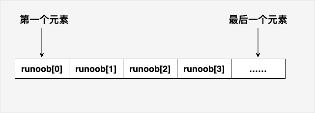
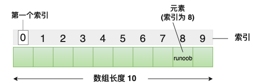
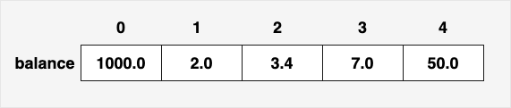

C array
C language supportsarray; its type should be a pointer to
Declaring an array does not declare individual variables one by one, such as example0, example1, ..., example99; rather, it declares an array variable, such as example, and then uses example
All arrays consist of contiguous memory locations. The lowest address corresponds to the first element, and the highest address corresponds to the last element.

A specific element in an array can be accessed by an index; the first index value is0。
The C language also allows us to use pointers to handle arrays, which makes operations on arrays more flexible and efficient.

Declaring arrays
In C, to declare an array, you need to specify the type of elements and the number of elements, as shown below:
type arrayName [ arraySize ];
This is called a one-dimensional array.arraySizeMust be an integer constant greater than zero,typecan be any valid C data type. For example, to declare an array of 10 elements of type doublebalance, the declaration statement is as follows:
double balance[10];
Nowbalanceis a usable array that can hold 10 numbers of type double.
Initializing arrays
In C, you can initialize the array element by element, or use a single initialization statement, as shown below:
double balance[5] = {1000.0, 2.0, 3.4, 7.0, 50.0};
; int *p = a;
If you omit the array size, the size of the array is the number of elements at initialization. Therefore, if:
double balance[] = {1000.0, 2.0, 3.4, 7.0, 50.0};
You will create an array that is exactly the same as the array created in the previous example. The following is an example of assigning a value to an element in the array:
balance[4] = 50.0;
The above statement assigns the value 50.0 to the fifth element of the array. All arrays use 0 as the index of their first element, also known as the base index. The last index of an array is the total size of the array minus 1. The following is a graphical representation of the array discussed above:

The following figure shows an array with a length of10, the index value of the first element is0, the ninth elementexample's index value is8:
Accessing array elements
Array elements can be accessed by the array name plus an index. The index of an element is placed inside square brackets, following the array name. For example:
double salary = balance[9];
The above statement will assign the value of the 10th element of the array to the salary variable. The following example uses the three concepts mentioned above, namely, declaring an array, assigning an array, and accessing an array:
Example
When the above code is compiled and executed, it produces the following results:
Element[0] = 100 Element[1] = 101 Element[2] = 102 Element[3] = 103 Element[4] = 104 Element[5] = 105 Element[6] = 106 Element[7] = 107 Element[8] = 108 Element[9] = 109
Getting the array length
The array length can be obtained usingsizeofoperator to get the length of the array, for example:
int numbers[] = {1, 2, 3, 4, 5};
int length = sizeof(numbers) / sizeof(numbers[0]);
Example
int main() {
int array[] = {1, 2, 3, 4, 5};
int length = sizeof(array) / sizeof(array[0]);
printf("Array length: %d\n", length);
return 0;
}
Using a macro definition:
Example
#define LENGTH(array) (sizeof(array) / sizeof(array[0]))
int main() {
int array[] = {1, 2, 3, 4, 5};
int length = LENGTH(array);
printf("Array length: %d\n", length);
return 0;
}
The output of the above example is:
数组长度为: 5
Array name
In C, the array name represents the address of the array, that is, the address of the first element of the array. When we declare and define an array, the array name represents the address of that array.
For example, in the following code:
int myArray[5] = {10, 20, 30, 40, 50};Here, myArray is the array name; it represents an integer array containing 5 elements. myArray also represents the address of the array, that is, the address of the first element.
The array name itself is a constant pointer, meaning its value cannot be changed; once determined, it cannot point to another location.
We can use the & operator to obtain the address of the array, as shown below:
int myArray[5] = {10, 20, 30, 40, 50};
int *ptr = &myArray[0]; // 或者直接写作 int *ptr = myArray;In the above example, the pointer variable ptr is initialized to the address of myArray, that is, the address of the first element of the array.
It should be noted that although the array name represents the address of the array, in most cases the array name is automatically converted to a pointer to the first element of the array. This means we can directly use the array name in pointer arithmetic, for example when passing arguments to functions or traversing an array:
Example
for (int i = 0; i < size; i++) {
printf("%d ", arr[i]); // The array name arr is treated as a pointer
}
}
int main() {
int myArray[5] = {10, 20, 30, 40, 50};
printArray(myArray, 5); // Passing the array name to a function
return 0;
}
In the above code, the printArray function accepts an integer array and the array size as parameters. We pass the array name myArray to the function, and inside the function the array name arr can be used like a pointer.
Detailed explanation of arrays in C
In C, arrays are very important, and we need to know more details about arrays. The following lists some important array-related concepts that C programmers must be clear about:
| Concepts | Description |
|---|---|
| Multidimensional arrays | C supports multidimensional arrays. The simplest form of a multidimensional array is the two-dimensional array. |
| Passing Arrays to Functions | You can pass a pointer to an array to a function by specifying the array name without an index. |
| Returning Arrays from Functions | C allows returning arrays from functions. |
| Pointer to an Array | You can generate a pointer to the first element of an array by specifying the array name without an index. |
| Static arrays and dynamic arrays | Static arrays allocate memory at compile time with a fixed size, while dynamic arrays manually allocate memory at runtime with a variable size. |